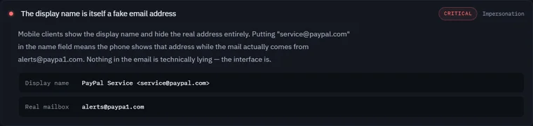
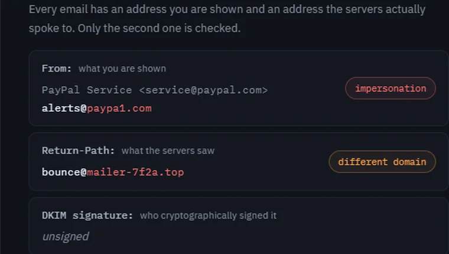
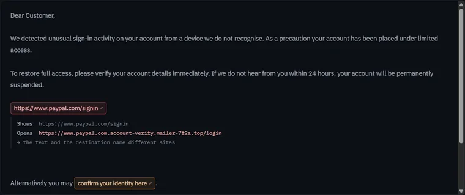
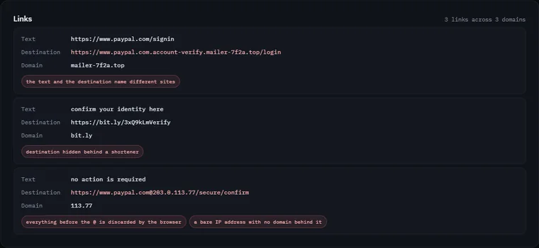
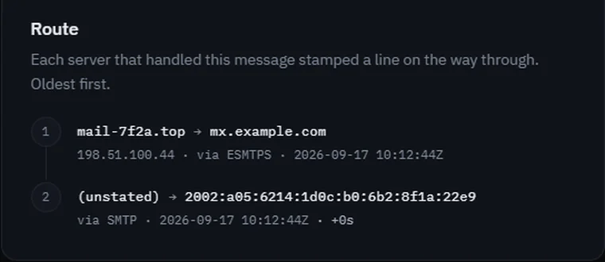
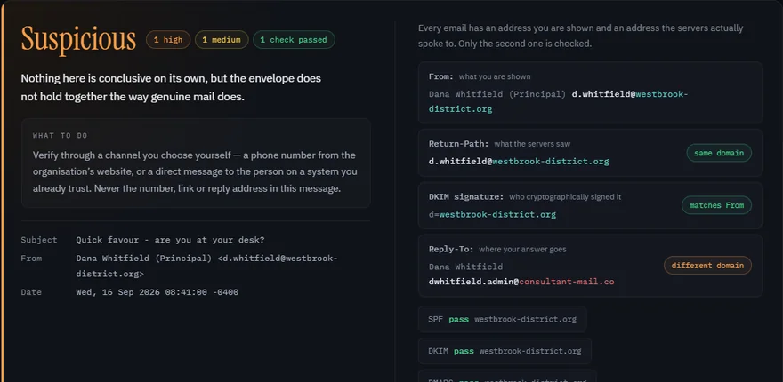
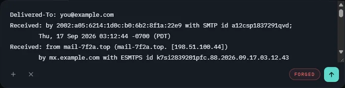
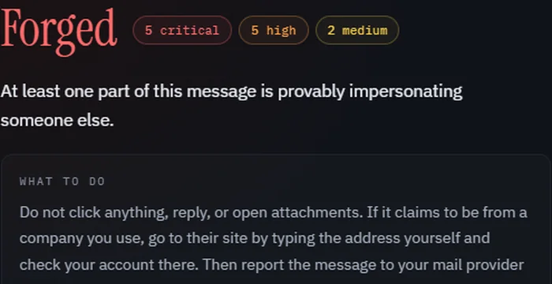

A fake address in the name field
Display names are free text and never verified. Put service@paypal.com
there and every phone shows it, because mobile clients hide the real address.
.eml, then drop it above.Headers alone are enough for the sender analysis. Include the body too and you also get the link and attachment analysis.
Every email has an address you are shown and an address the servers actually spoke to. Only the second one is checked.
Each row is derived from a header in your message. Open one to see the header it came from.
Reconstructed as plain text — this page never renders a pasted email's HTML. Click any link to see where it really goes.
Each server that handled this message stamped a line on the way through. Oldest first.
Highlighted lines are the ones the findings are built on.
The two senders
Only the second gets checked. When they disagree and nothing ties them together, that gap is the whole attack — and it is invisible in every mail client ever made.

Links, exposed
The message is rebuilt as plain text — its HTML is never rendered — and every link becomes a button. Click one and it tells you where it actually goes, and which trick it is using to hide that.
@-in-URL misdirection and bare IPsjavascript: and data: URLs
What it catches
None of them involve spelling. All of them are visible in the headers, and every one is something real mail almost never does.

Display names are free text and never verified. Put service@paypal.com
there and every phone shows it, because mobile clients hide the real address.

Text and destination compared for every link, with the specific misdirection named rather than scored.

Every server stamps a Received: line. Read in order they are a
timeline — and invented hops report times that run backwards.

When somebody sends from a real mailbox they have stolen, the cryptography is genuine — everything is, except the person typing. This is the case that defeats every header tool, so it is one of the built-in specimens rather than a footnote: all three checks green, verdict still Suspicious, caught on a Reply-To divergence and a stack of pressure tactics. It is also why the verdict never says "safe".
Punycode is decoded to what you would actually see. Confusables are
folded, so paypa1.com and rnicrosoft.com surface too.
Windows hides known extensions, so this arrives looking like a PDF. The one that runs is the last one.
[ method ]
Roughly thirty deterministic rules over RFC 5322 headers. No model, no score, no guessing — and every finding cites the header it came from.

step 01
Gmail calls it Show original, Outlook View message source.
That is the message as the servers saw it, headers and all. Or drop
a .eml straight onto the box.

step 02
Authentication, alignment, impersonation, lookalike domains, links, attachments and the route — in about a millisecond, in this tab, with nothing sent anywhere.
step 03
Open any finding and it shows the header underneath it. That is the difference between a tool you have to trust and one you can check.
Privacy
This page loads a dozen local files and then makes no further network requests. Not analytics, not fonts, not a scanning API. You can disconnect from the internet and it will keep working — which is a claim you can check in your own developer tools rather than take on trust.
That matters because every comparable tool asks you to paste your email into someone else's server. Reporting a phishing attempt shouldn't require handing a stranger the contents of your inbox.
The cost, stated plainly: DKIM signatures can't be re-verified here, because that needs a DNS lookup for the sender's public key. Return Path reads the result your mail provider already recorded.

Limits
A tool that only tells you what it caught is half a tool. Here's where this one stops.